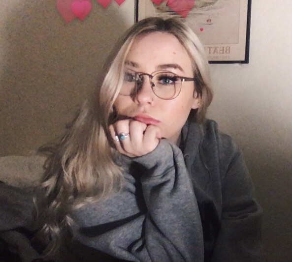

Naomi Rumph
Artist, lover of animals, and cephalopod enthusiast
About:
Naomi is a fourth year Art major at UCSC. In her free time, Naomi plays a wide assortment of video games and loves to farm virtually on Stardew Valley. Some other hobbies include digital painting and reading true crime novels.